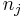

i=1,2,...,l und .
i=1,2,...,l und .
Inhalt |
Die Diskriminanzanalyse wird verwendet, um Beobachtungen Gruppen zuzuweisen. Hierfür werden Informationen über Beobachtungen, deren Gruppenzugehörigkeit bekannt ist, verwendet, d.h. Schulungsdaten.
seien die Schulungsdaten mit n Beobachtungen und p Variablen bei ng Gruppen. ist ein Zeilenvektor des Stichprobenmittelwerts für die j-te Gruppe,  ist die Anzahl der Beobachtungen für die j-te Gruppe. Die Kovarianzmatrix innerhalb der Gruppe für Gruppe j kann ausgedrückt werden durch:
Die gepoolte Kovarianzmatrix innerhalb der Gruppe ist:
Beachten Sie, dass fehlende Werte listenweise aus der Analyse ausgeschlossen werden, d.h., eine Beobachtung, die einen oder mehrere fehlende Werte enthält, wird aus der Analyse ausgeschlossen.
Wenn angenommen wird, dass die Schulungsdaten einer multivariaten Normalverteilung folgen, kann die folgende Statistik des Likelihood-Verhältnis-Tests G verwendet werden, um auf Gleichheit der Kovarianzmatrizen innerhalb der Gruppe zu testen.
wobei
Für große n ist G ungefähr als eine Variable mit Freiheitsgeraden verteilt.
Die kanonische Diskriminanzanalyse wird verwendet, um die lineare Kombination der p Variablen zu suchen, die das Verhältnis der Streuung von "zwischen Gruppen" und "innerhalb der Gruppe" maximiert. Die gebildeten kanonischen Variate können dann verwendet werden, um zwischen Gruppen zu unterscheiden.
Die Schulungsdaten mit subtrahierten Gesamtmittelwerten sei X und der Rang sei k, dann kann die orthogonale Matrix Q aus der QR Zerlegung (voller Spaltenrang) oder SVD aus X berechnet werden. ist die erste k Spalte von Q. sei eine orthogonale n x ng - 1-Matrix zum Definieren von Gruppen. Dann sei k mal Matrix V
Die SVD von V ist:
Diagonale Elemente (nicht Null) der Matrix sind die l kanonischen Korrelationen verbunden mit den l kanonischen Variaten i=1,2,...,l und .
Eigenwerte der Matrix zu den Summen der Quadrate innerhalb der Gruppen sind:
 Zeilenvektoren des kanonischen Gruppenmittelwerts bzw. des Gruppenmittelwerts für die j-te Gruppe sind.
Zeilenvektoren des kanonischen Gruppenmittelwerts bzw. des Gruppenmittelwerts für die j-te Gruppe sind.Die Mahalanobis-Distanz ist ein Maß der Distanz einer Beobachtung von einer Gruppe. Sie hat zwei Formen. Für eine Beobachtung  aus der j-ten Gruppe ist die Distanz:
aus der j-ten Gruppe ist die Distanz:
Die A-priori-Zugehörigkeitswahrscheinlichkeit gibt die Ansicht des Anwenders wieder hinsichtlich der Wahrscheinlichkeit, dass die Beobachtungen aus unterschiedlichen Gruppen stammen. Origin unterstützt zwei Arten von A-priori-Zugehörigkeitswahrscheinlichkeiten:
Von den p Variablen der Beobachtungen wird angenommen, dass sie einer multivariaten Normalverteilung mit Mittelwert und Kovarianzmatrix folgen, wenn die Beobachtung aus der j-ten Gruppe stammt. Wenn die Wahrscheinlichkeit ist, die Beobachtung in Gruppe j zu beobachten, dann ist die A-posteriori-Zugehörigkeitswahrscheinlichkeit zur Gruppe j:
Die Parameter und werden in den Schulungsdaten geschätzt. Die Beobachtung wird der Gruppe mit der höhsten A-posteriori-Zugehörigkeitswahrscheinlichkeit zugewiesen. Origin bietet zwei Methoden zum Berechnen der A-posteriori-Zugehörigkeitswahrscheinlichkeit.

sind folgendermaßen standardisiert und wird durch die Standardisierung bestimmt.
Der Typikalitätsindex gibt die Wahrscheinlichkeit an, mit der Sie eine Beobachtung erhalten, die typischer für Gruppe j ist als die i-te Beobachtung. Wenn sie für alle Gruppen nah bei 1 liegen, ist das ein Hinweis darauf, dass die Beobachtung von einer Gruppierung stammen könnte, die nicht in den Schulungsdaten dargestellt ist. Der Typikalitätsindex wird berechnet mit:
wobei die untere Wahrscheinlichkeit aus einer Beta-Verteilung für gleiche Kovarianzmatrizen innerhalb von Gruppen is,
für nicht gleiche Kovarianzmatrizen innerhalb der Gruppe,
Die lineare Diskriminanzfunktion (auch bekannt als Fishers lineare Diskriminanzfunktionen) kann berechnet werden mit:
Jede Beobachtung in den Schulungsdaten kann durch A-posteriori-Zugehörigkeitswahrscheinlichkeiten klassifiziert werden, d.h., sie wird der Gruppe mit der höchsten A-posteriori-Zugehörigkeitswahrscheinlichkeit zugeordnet. Die quadrierte Mahalanobis-Distanz von jeder Gruppe und der Typikalitätsindex von jeder Gruppe können ebenfalls berechnet werden.
Das Klassifizierungsergebnis für Schulungsdaten wird zusammengefasst, indem gegebene Gruppenzugehörigkeit und vorhergesagte Gruppenzugehörigkeit verglichen werden. Eine fehlklassifizierte Fehlerrate wird durch den Prozentsatz der fehlklassifizierten Beobachtungen berechnet, gewichtet durch die A-priori-Zugehörigkeitswahrscheinlichkeiten der Gruppen. d.h.
wobei der Prozentsatz der fehlklassifizierten Beobachtungen für die j-te Gruppe ist.
Es erfolgt der gleiche Vorgang wie beim Klassifizieren der Schulungsdaten, nur dass, um eine Beobachtungszugehörigkeit in den Schulungsdaten vorhersagen zu können, die Beobachtung während der Berechnung der Kovarianzmatrizen innerhalb der Gruppe oder der gepoolten Kovarianzmatrix innerhalb der Gruppe ausgeschlossen ist.
Kovarianzmatrizen innerhalb der Gruppe und die gepoolte Kovarianzmatrix innerhalb der Gruppe werden aus den Schulungsdaten berechnet. Jede Beobachtung in den Testdaten kann durch A-posteriori-Zugehörigkeitswahrscheinlichkeiten klassifiziert werden, d.h., sie wird der Gruppe mit der höchsten A-posteriori-Zugehörigkeitswahrscheinlichkeit zugeordnet.